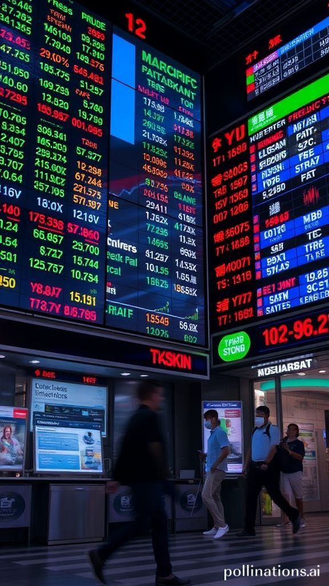

Ninety
01 ・ 迷思破解
「配置決定 90% 的績效」？
Brinson 等人（1986）的 93.6%，講的是同一個基金報酬隨時間的起伏。Ibbotson & Kaplan（2000）把問題拆開：
90%隨時間起伏
40%基金之間差距
100%報酬水準
wiki：concepts/asset-allocation ・ 來源：web-2026-11-15-classic-theory
 →
→從「90%」迷思到 2022 年的教訓 ・ 內容取自資產配置 wiki
Brinson 等人（1986）的 93.6%，講的是同一個基金報酬隨時間的起伏。Ibbotson & Kaplan（2000）把問題拆開：
wiki：concepts/asset-allocation ・ 來源：web-2026-11-15-classic-theory
→公式為定義。拉桿使用示意假設：股 60%／債 40%、股票波動 20%、債券波動 6%（非歷史數據）。wiki：concepts/correlation
對照：AQR 指出美國股債月相關 2000–2022 約 −0.2、1926–1999 約 +0.18（web-2026-11-15-strategies-evidence）。
通膨不確定性升高，股債相關性轉正，債券沒能接住股票。
美元、名目；永久組合與全天候為回測網站、未計稅。來源：web-2026-11-15-strategies-evidence
 →
→新台幣在股災時常一起貶，但 2020 年反而升值——匯率不是可靠的避險。
2026-05／2026-08 資料。wiki：taiwan/taiwan-investor-context ・ 來源：web-2026-11-15-taiwan-market

→